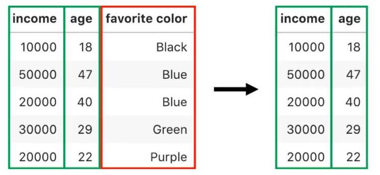
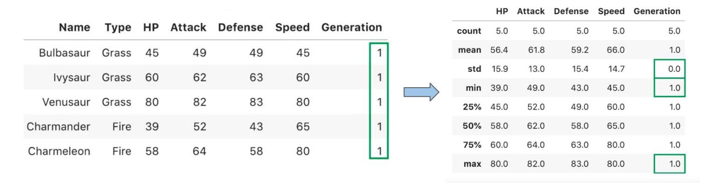
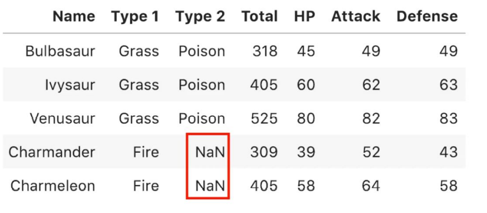
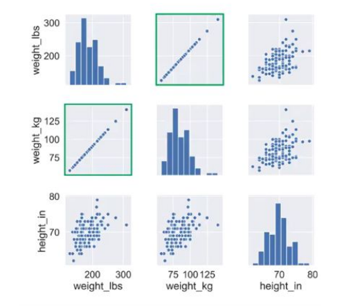
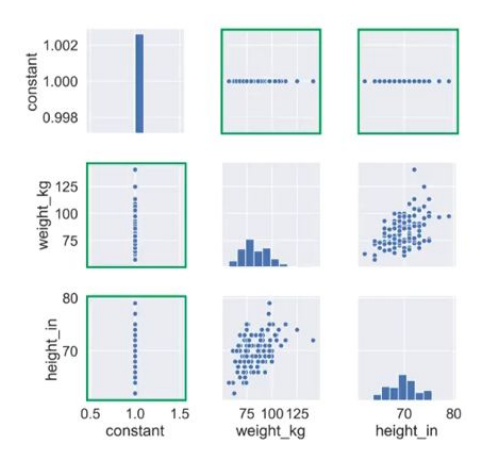
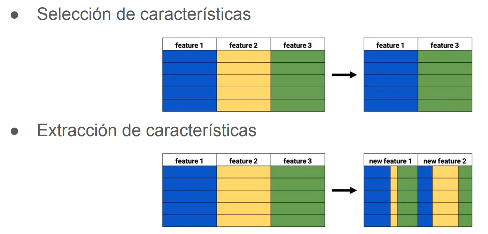

3.4. ANÁLISIS EXPLORATORIO DE DATOS (EDA) II
ANÁLISIS EXPLORATORIO DE DATOS (EDA) II¶
Disponer de grandes espacios de almacenamiento hace que se guarden muchísimas características de cada instancia. Es tentador almacenar más y más información así evitamos tomar decisiones sobre qué información realmente se necesita o se va a necesitar en el futuro.
Problema: puede ser perjudicial para el análisis de los datos y el desarrollo de modelos predictivos.
Ejemplo:
○ Tenemos 10.000 características sobre cada cliente de nuestra tienda virtual.
○ Queremos predecir qué cliente comprará una nueva marca de comida para perros.
○ La cantidad de características relevantes para esta tarea es probablemente muy pequeña.
○ Mejor de los casos: muchos atributos irrelevantes provocarán una sobrecarga computacional innecesaria sobre cualquier algoritmo de minería de datos.
○ Peor de los casos: estos atributos innecesarios introducen ruido y provocan que el algoritmo produzca malos resultados.
Dimensionalidad ¶
● Dimensionalidad (dimensionality): número de características (columnas) que tienes en tu conjunto de datos.
● Tenemos alta dimensionalidad (high dimensional) cuando nuestro conjunto de datos tiene más de 10 columnas.
● Trabajar con un conjunto de datos más pequeños facilita tu vida como científico de datos.
- Menos complejidad hace que sea más fácil de interpretar por un humano.
- Menos requisitos de almacenamiento y capacidad/velocidad de cómputo.
-
Mejor construcción de modelos descriptivos y predictivos.
3.1. Evita la maldición de la dimensionalidad (the curse of dimensionality).
3.2. Reduce el sobreajuste a los datos (overfitting).
La maldición de la dimensionalidad
○ Es preferible tener un conjunto de datos con muchas características que uno con pocas.
○ Problema: los modelos se suelen sobreajustar (overfitting) cuando hay muchas dimensiones.
○ Con muchas características necesitamos tener muchas instancias o habrán muchas combinaciones únicas de observaciones.
○ El modelo acabará memorizando las muestras de entrenamiento en lugar de generalizar.
○ Para evitar el sobreajuste el número de observaciones debería incrementarse exponencialmente con respecto al número de características.
○ Esto es muy complicado para conjuntos de datos con muchas características.
○ La solución es aplicar técnicas de reducción de la dimensionalidad.
Técnicas de reducción de dimensionalidad ¶
La reducción de la dimensionalidad podemos llevarla a cabo por:
- Selección de características.
- Extracción de características.
Selección de características¶
- Seleccionar solo las columnas que son importantes para el proceso de análisis en un conjunto de datos grandes.
- Problema: ¿qué características son importantes?
- Si eres un experto en el dominio lo sabrás fácilmente.

-
Selección por varianza:
-
Podemos eliminar columnas con poca varianza.
-
La mayoría de valores son iguales y no nos permiten distinguir unas muestras de otras.
-
Son poco útiles para el análisis y la construcción de modelos.
-

-
Selección por valores ausentes:
-
Otra razón para eliminar una característica es que contenga muchos valores ausentes (NaN).
-
Si no hay muchos valores ausentes, se puede aplicar imputación para completarlos.
-

-
Selección mediante visualización:
-
Correlación perfecta (todos los puntos en la diagonal) entre weight_kg y weight_lb.
-
Ambas tienen la misma información y podemos eliminar una de ellas.
-

- Si hay una característica numérica sin varianza (una constante) también se puede ver fácilmente de manera visual con la matriz de dispersión.

-
Selección por correlación:
-
La matriz de dispersión permite ver qué características están fuertemente correlacionadas.
-
Podemos medir de manera precisa esa relación con medidas de correlación (ej. pearson).
- -1 correlación negativa perfecta, 0 sin correlación, 1 correlación positiva perfecta.
-
Una correlación perfecta implica que si conoces una característica puedes predecir la otra perfectamente en ese conjunto de datos.
-
Las características que están perfectamente correlacionadas no aportan información al conjunto de datos, pero añaden complejidad.
-
Interesa eliminar una de las dos características que capturen la misma información.
-
También se deberían eliminar aquellas cuya correlación se aproxime a 1 si están midiendo cosas similares.
-

Extracción de características ¶
● La selección de características elimina completamente la característica y todos sus datos del conjunto.
● La extracción de características (feature extraction) es una aproximación diferente, pero con el mismo objetivo de reducir la dimensionalidad.
● En lugar de seleccionar un subconjunto de características, se calcularán o extraerán nuevas características a partir de las originales.
● Problema: las nuevas características creadas son menos intuitivas y más difíciles de interpretar que las originales.
● Permite reducir mucho los conjuntos de datos que tienen correlaciones fuertes entre las diferentes características.
Ej: si digo que una persona tiene los pies grandes, las manos grandes y los brazos grandes, puedo resumir este dato diciendo que la persona es alta.
● Cuando conoces bien los datos, puedes combinar las características originales en nuevas que dejen a las primeras obsoletas.
Ej: en un conjunto de datos con el peso y altura de varias personas, podemos usar el índice de masa corporal (IMC) para combinar ambas en una y eliminar las anteriores.
● Hay algoritmos para calcular estas nuevas características de manera que se pierda el mínimo posible de información. El análisis de componentes principales (PCA) permite calcular nuevas características.
Análisis de componentes principales ¶
-
Principal Component Analysis (PCA).
-
Técnica para describir un conjunto de datos en términos de nuevas variables (componentes) no correlacionadas.
-
Los componentes se ordenan por la cantidad de varianza original que describen, por lo que la técnica es útil para reducir la dimensionalidad.
-
Se utiliza tanto para el análisis de datos exploratorio como para la construcción de modelos predictivos.
-
Es importante escalar primero los valores para que las características sean fáciles de comparar.
-
Si añadimos una nueva característica al dataset original habría que añadir también un nuevo componente principal si no queremos perder información.
-
Podríamos tener 100 componentes principales para describir conjuntos de 100 características.
- No tendría sentido porque los componentes principales son más difíciles de entender.
-
Los componentes principales no contienen información duplicada y están ordenados de más a menos importante.
- En conjuntos de datos con mucha correlación, la mayoría de varianza se explica con los primeros componentes.
- El resto de componentes explican tan poca varianza que pueden ser eliminados.
-
Podemos decirle al algoritmo cuántos componentes queremos que calcule.
-
También podemos decirle la proporción mínima de varianza que queremos mantener.
- El algoritmo decidirá cuántos componentes debe mantener.
-
Problema: no hay nada que nos diga cuál es el número correcto de componentes a mantener.
- Depende de cuánta información estás dispuesto a sacrificar para reducir la complejidad.
Imputación y Outliers ¶
La imputación es como "inventar" para rellenar. En muchas ocasiones es necesario para probar los modelos de machine learning porque sino no funcionan correctamente. Hay varias maneras de imputar un valor nulo:
- Imputando por algún valor de tendencia central. El más común es la mediana o la media.
- Imputando con una categoría "unknown". Añadiríamos una categoría más aunque aumentamos la dimensionalidad del problema.
- Imputando un valor conocido. Si conocemos el problema y por qué se genera ese nulo, podemos corregirlo.
- Imputando con algún modelo de Machine Learning. Generamos un modelo que intente predecir el valor de ese nulo en función de los valores de los demás registros que no tienen un nulo en esa posición.
from sklearn.impute import IterativeImputer
from sklearn.impute import SimpleImputer
imputer = IterativeImputer()
imputed_df = imputer.fit_tranform(df)
-
Atípico
-
Destacado
-
Excepcional
-
Valor extremo, valor anómalo
Los outliers en nuestro dataset serán los valores que se " escapan al rango donde se concentran la mayoría de muestras".
- Error: si tenemos un grupo de edades de personas y tenemos una persona con 160 años, seguramente sea un error.
- Límites: podemos tener valores que escapan de la media, pero queremos mantener el dato para que no perjudique al aprendizaje del modelo ML.
- Punto de interés: casos "anómalos" los que queremos detectar y que sean nuestro objetivo.